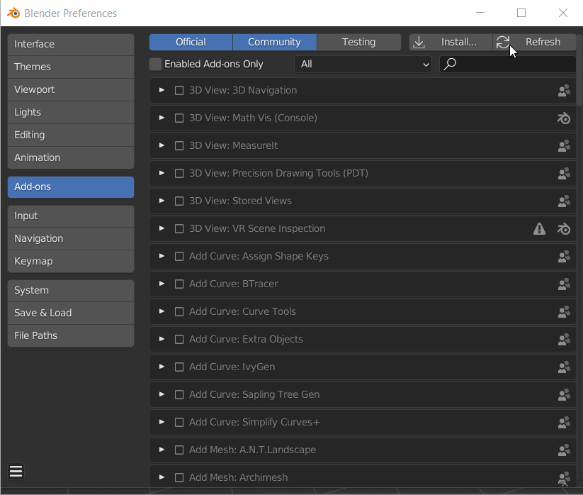

The addon can be downloaded from the Substance 3D in Blender. Click Adobe Substance 3D add-on for Blender to signing in with an Adobe account and access the download page. Navigate to the bottom of the page to download the .zip files for the Substance 3D add-on and Substance 3D Integration Tools.
There are two separate .zip files to download and install:
For Mac users: Users should disable "open safe files after downloading" if they are downloading the add-on with Safari.
Safari web browser defaults to unzipping downloaded .zip files, which need to remain zipped when for installation. To prevent the file from unzipping, update Safari preferences to not open "safe" files after downloading.

When updating the Add-on only:
When updating the Integration Tools only:
OR